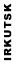

 |
||||
|
Первый в Иркутске турнир по Quake II TEAMPLAY Началось все как обычно - жеребьевка и все такое. Все, кроме меня, Скорпа и Матриксов нервничают :). На первом круге мы попались с командой Nobles - 3 (N8-SpeakeR & N7-Slash), точнее это они попались. Карта: первомап. Счет: 107:14 (кажись), мы выиграли. Мы их просто штамповали рельсами, были сплошные спавн-фраги (ну дак). За пять минут до конца у нас было 70 фрагов, хотели набрать сто... И ведь набрали, они, правда, правда пытались мышиться :), но Скорп вовремя нашел Спикера под лестницой (вот мышь позорная). Тем временем, наш второй состав (Demon.38 & BaLance.38) проиграли Nobles-1 на несколько фрагов. Всю картину, как и следовало ожидать испортили Матриксы (конкретно, Кропс и Рулез), которые играли с совсем ламаками и набрали на целый фраг больше нас. Круг второй, токайские башенки. Мы играли с какой-то ламовской командой RAP (Zyub & Boy), разорвали их 89:0. Мы вдвоем паслись на кваде и красном арморе, квад сперли два раза и то ненадолго. Что происходило со вторым составом я не помню. А Матриксы порулили Сниперов фрагов на 15. Круг третий, ку2дм5. Карта гигарулезная (для тимплея). Я так хотел попасться с Матрикс-1, но жаль мы играли с командой HS&MX ([MX] NightMare (M) & Alex Killer [HS]). Вынесли что-то около 55:14. Сыграли по-ламацки, хоть и пасли квад, который Найтмэр утащил по-моему только два раза. И оба раза безрезультатно, я не знаю, где мышился Скорп, я мышился возле зеленого армора под лестницой. Был там прикол, как рассказывает Найтмэр, они втроем подрались и все умерли, потом я подбежал к ним с закваченой базукой и засамокиллился (уже после них). Я почти все время пасся на кваде. Кстати, эта команда оказалась самой везучей, первый, второй, четвертый круги они прошли нахаляву, т.е. вообще не играя. Круг четвертый, полуфинал, отцы. мап ку2дм8. Игра с Матрикс-1. Итоговый счет я не помню, но разрыв небольшой, фрагов так 15-20. Почти сразу мы схалявили пауэршилды, но потом по-ламовски их потеряли. Побежали халявить Рулеза (в двоих) и нас Кропс грохнул обоих (из БФГ), а ПС-ов у нас было по два! Но это нам все равно не помешало зарулить (техника-то у нас лучше). На этом же круге Angel.38 & N3-Doctor проиграли на один фраг второму составу 38, а Nobles-1 зарулили Snipers тоже на один фраг! Круг пятый, лузеры, первомап. Матриксы рулят MX&HS, а 38 Squad - 2 зарулили Nobles - 1, в чем я сомневался, но встретились две аркадные команды на аркадной мапе. Демон как разошелся, и зачейнганил их всех нафиг. Круг шестой, лузеры, ку2дм3. MatriX vs 38 Squad - 2. Я, честно сказать, думал, что в финали будем мы и Матриксы, но... Перед началом игры я сказал Балансу, где находится лучшая рельсовая точка на уровне, где он, собственно, и торчал всю игру, штампуя Матриксов, в основном Рулеза (тот вообще мясом работал :). Демон, как и следовало ожидать торчал на PowerUp'ах (на кваде и пенте). Первый раз он схватил пенту и квад и упал с ними в лаву посреди уровня, сидел там, но так никого и не дождавшись, помер. Второй раз он упал с пентой в лаву (с мостика) и суициднулся, т.к. выбраться оттуда без квада невозможно. А в промежутках между пентами, Демон преспокойно висел на кваде и показывал, как надо убивать из закваченной базуки. Был прикольный момент - у МХ'ов было 7 фрагов, потом стало 3 (была череда падений в лаву, самокиллов и даже сквишей). Матриксы, как мне показалось, расстроились, но отмазались тем, что играют только в первую и третью кваки. Эта игра, по сути, была самой интересной до финала. Итак, в финале два состава 38 (первый и второй). Финал, игра первая, первомап. Мы со Скорпом думали, что, раз не прошли Матриксы, финал мы вообще нахаляву пройдем, но не тут-то было, у этих гадов (Баланса и Демона) пошла рельса (особенно у Баланса, он нас просто штамповал, как мы Nobles-3), а у нас не пошла. Сначала мы держали приличный разрыв, который потом начал резко сокращаться. Они показывали чудеса техники - Баланс с рельсой (прямо как я в молодости :), а Демон со всем подряд. Под конец мы уже начали мышиться, выигрывая всего фрагов на 7-8, как говорят зрители, еще минуты три, и мы бы проиграли. Но время кончилось, первый состав выиграл. Сказалось еще то, что мы расслабились, думали халява... Финал, игра вторая, ку2дм5. После первомапа мы поняли, что они неплохие аркадники, но с тактикой у них проблемы. Но на дм5 Баланс все-таки добрался до рейлгана и вдвоих они неплохо отпасывали квад и красный армор. Но квад у них бывал не часто, наверное, раз пять за всю игру. Мы опять выиграли на 5 фрагов. Финал, игра третья, ку2дм8. Вот тут-то мы и показали, кто в клане настоящие отцы. Первым ПС схватил Скорп и сразу же его убили, потом я нашел ПС, потом еще один... Вот тут началась штамповка. Мы выиграли с разрывом в 40 фрагов. Места распределились следующим образом: (так,
как я и предполагал) 38 [VooDoo] |
||||